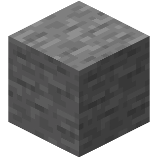
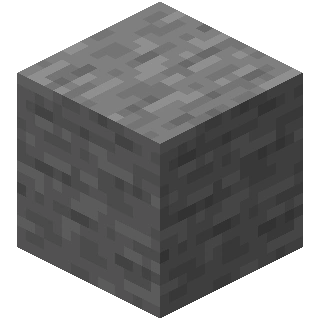

Cave Game
Minecraft Order of the Stone
Следующая версия не заставила себя долго ждать и вышла почти в полночь 15 мая - rd-20090515
Человека теперь можно призвать нажав кнопку G, а в центре экрана красуется незаметный на первый взгляд, но важный для игры - крестик.

16 мая 2009
За одни сутки было выпущено целых 11 новых версий! Но обо всём по порядку.
Почти в час ночи по Шведскому времени выходит rd-160052. На тот момент это самое большое обновление, ибо добавлено 3 новых блока: земля, камень и доски. Выбирать блоки можно нажатием цифр от 1 до 4. При ломании блока видны частицы. Земля привращается в траву под действием света. Текстура самой травы изменена - она стала чуточку ярче.
 
